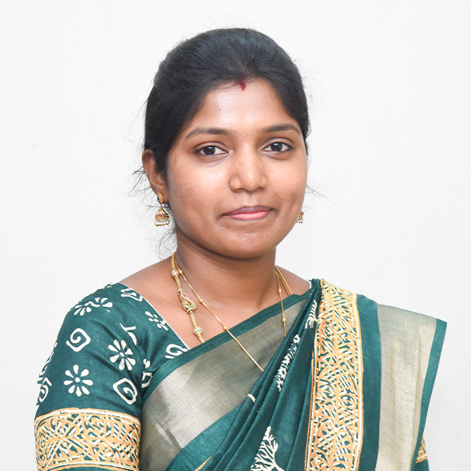

Indian Patent Application · Published
A System for Prevention and Mitigation of Venostasis in Lower Limb and a Method Thereof
- Application No.
- 202541013703
- Published
- 28 · 02 · 2025
- Inventors
- Nithyakalyani Krishnan, P. Muthu
Assistant Professor · Department of Biomedical Engineering
Building non-invasive diagnostic systems for vascular health. Her work pairs infrared thermal imaging with deep learning to detect chronic venous insufficiency early, before it becomes a costly, chronic burden.

Dr. Nithyakalyani K is an Assistant Professor in the Department of Biomedical Engineering at SRM Institute of Science and Technology, Kattankulathur. All three of her degrees, the B.Tech, M.Tech and Ph.D in Biomedical Engineering, are from SRM.
Her research develops multimodal diagnostic and therapeutic systems for vascular health monitoring. She combines infrared thermal imaging, machine and deep learning, and wearable biomedical devices. She has worked on several interdisciplinary projects on the early detection and management of chronic venous insufficiency, drawing on biomedical signal and image processing and IoT-based health monitoring.
Her doctoral work received the APJ Abdul Kalam Research Award 2025 for excellence in doctoral research from SRMIST.
Chronic venous insufficiency (CVI) means blood pools in the lower limbs. Diagnosis is expensive and often late. Her work makes it cheap, contactless and early. The pathway runs from a thermal camera to a trained network, and then to a wearable that acts on the result.
Infrared thermography captures the lower-limb heat patterns linked to venous reflux. No contact and no radiation.
A Detectron2 network finds and segments regions of venous abnormality in each thermogram.
CVINet, a purpose-built CNN, and a modified DenseNet-121 separate CVI from healthy limbs with 96.8% and 97.4% accuracy.
A patented system for preventing and mitigating venostasis in the lower limb takes the work beyond diagnosis.
Peer-reviewed journal articles and book chapters, newest first. Each entry links to the published version through its DOI.
In Generative AI and Emerging Technologies: Transforming Engineering, Innovation and Entrepreneurship, eds. R. Rani & M. Thomas. AMIEE, 2026. ISBN 978-1-68576-673-3.
Surveys how generative models are changing drug discovery and biomedical research, from designing candidate molecules to generating and augmenting biomedical data.
Artificial Intelligence over Infrared Images for Medical Applications (AIIIMA 2025). Lecture Notes in Computer Science, vol. 16308, pp. 113–127. Springer, Cham.
Uses facial thermograms and machine-learning classifiers as an objective, contact-free way to assess orofacial pain, which is otherwise judged mostly by self-report.
International Research Journal on Advanced Engineering Hub, 3(03), 963–970.
Applies the Detectron2 detection and segmentation framework to lower-limb thermograms, localising the regions affected by venous reflux to support early CVI diagnosis.
International Journal of Engineering Technology and Management Sciences, 9(2), 267–274.
A CNN estimates haemoglobin from images of the inner eyelid, a needle-free alternative to blood tests for anemia screening. It is evaluated with MAE, RMSE and correlation against laboratory values.
Advances in Computational Intelligence for Health Informatics and Computer-Aided Diagnosis: Methods, Applications, and Tools, pp. 53–77. CRC Press. Scopus-indexed.
A survey of the deep learning architectures used for detecting and classifying disease in medical images, covering their strengths, limits and clinical readiness.
International Journal of Imaging Systems and Technology, 34(2), e23004.
Introduces CVINet, a custom convolutional network with dropout and batch normalisation that learns directly from raw thermal images. It reaches 96.8% binary accuracy, ahead of VGG-16, EfficientNet-B0 and ResNet-152 baselines.
Biomedical Engineering: Applications, Basis and Communications, 36(01), 2350030.
Compares transfer-learned CNNs (DenseNet-121, EfficientNet-B0, Inception-v3) for CVI detection without handcrafted features. A modified DenseNet-121 performs best, with 97.4% test accuracy.
Communication and Intelligent Systems (ICCIS 2023). Lecture Notes in Networks and Systems, vol. 969, pp. 165–176. Springer, Singapore.
Extracts features from lower-limb thermograms and trains classical machine-learning models to predict CVI. This is the groundwork for the deep learning models that followed.
Citation counts are from Crossref as of September 2026. For live metrics, see the Scopus author profile (ID 58676436900) and ORCID record.
Best Paper Presentation · PG Category
International Conference on AI Innovations in Engineering, Science & Management (ICAiSEM 2026), RITE Bhubaneswar with RSP Research Hub · Oral presentation
4th International Conference on AI over Infrared Images for Medical Applications (AIIIMA 2025), held virtually on 15 Nov 2025
International Conference on Engineering, Science and Management (ICESM 2025), Maharashtra
5th International Conference on Communication and Intelligent Systems (ICCIS 2023), MNIT Jaipur
International Conference on Innovative Trends in Engineering and Sciences (ICITES 2022), Sathyamangalam
Indian Patent Application · Published
Award
Awarded by SRM Institute of Science and Technology, Kattankulathur, for excellence in doctoral research.
Award · Aug 2026
ICAiSEM 2026, for “Deep Learning-Enabled Wearable ECG System for Automated Arrhythmia Detection”.
Editorial · Dec 2025
Journal of Academic Trends & Innovative Research (JATIR), an international peer-reviewed open-access journal.
Reviewing · Apr 2026
12th International Conference on Communication and Signal Processing, Adhiparasakthi Engineering College, with IEEE Madras Section · 20–22 Apr.
Research milestones, faculty development and departmental service from the monthly activity reports, June 2025 to August 2026. Select a certificate to view it in full.
ICAiSEM 2026, for “Deep Learning-Enabled Wearable ECG System for Automated Arrhythmia Detection”
Oral presentation at ICAiSEM 2026, Department of CSE, Radhakrishna Institute of Technology and Engineering, Bhubaneswar, with RSP Research Hub and Eclearnix Edtech, Coimbatore · 28–29 Aug
In Generative AI and Emerging Technologies: Transforming Engineering, Innovation and Entrepreneurship · ISBN 978-1-68576-673-3 · DOI ↗
Speaker Ms. Swetha Nagaraj, Accenture · 13 Aug
Edcorner Learning, via Udemy · 17 Aug
First stage of IOP Publishing’s peer review training, towards becoming an IOP Trusted Reviewer
School of Computing, SRMIST, Kattankulathur
Institute for Engineering Research and Publication · Aug 2026 – Aug 2027
Department of Biomedical Engineering with the Department of Networking and Communications, SRMIST · 27–31 Jul
Department of Biomedical Engineering, SRMIST · 21–22 Jul
12th International Conference on Communication and Signal Processing, Adhiparasakthi Engineering College, Melmaruvathur, with IEEE Madras Section · 20–22 Apr
Speakers Karan Mehta (Arthrex, Australia) and Dr. Harini Narasimhan (Revvity, Germany)
Speaker Ms. Harina CV, NovaAir – Air Liquide
Department of Biomedical Engineering · 20 Dec
13 Dec
Journal of Academic Trends & Innovative Research, an international peer-reviewed open-access journal
Lecture Notes in Computer Science, vol. 16308, Springer · online 17 Nov
Presented the orofacial pain thermography paper · virtual · 15 Nov
Department of Computational Intelligence, School of Computing, SRMIST · 3–8 Nov
Speaker Mr. Rakesh SethuMadhavan, Siemens Healthcare
Speaker Mr. Surendhra Goli, Carl Zeiss India · 29 Aug
Taylor & Francis Group · 6 Aug
MeitY Electronics & ICT Academies: NIT Patna, IIITDM Jabalpur, IIT Guwahati, MNIT Jaipur, IIT Kanpur, IIT Roorkee · 7–18 Jul
Scriptora International Publications, Kerala · online · 29 Jun
CRC Press · Scopus-indexed
“Investigation on Multimodal Approaches for the Diagnosis and Management of Lower Limb Chronic Venous Insufficiency”, under Dr. P. Muthu · 28 Apr
Fourteen courses across the undergraduate and postgraduate biomedical curriculum, from anatomy to AI.
Department of Biomedical Engineering, SRM Institute of Science and Technology, Kattankulathur
Department of Biomedical Engineering, Rajalakshmi Engineering College, Chennai
Department of Biomedical Engineering, SMK Fomra Institute of Technology, Chennai
SRM Institute of Science and Technology. Full-time scholar under Dr. P. Muthu.
“Investigation on Multimodal Approaches for the Diagnosis and Management of Lower Limb Chronic Venous Insufficiency”
Thesis submitted Nov 2024 · Viva voce 28 Apr 2025
SRM University
SRM University
Department of Biomedical Engineering, SRMIST. Organises alumni talks, mock interviews and the Alumni Day. See events ↓
Journal of Academic Trends & Innovative Research (JATIR) · since Dec 2025
ICCSP 2026, IEEE Madras Section
Member
Premium Professional Member, Institute for Engineering Research and Publication · 2026–27
Member, International Association of Engineers
For research collaboration, academic enquiries or invited talks on thermal imaging and AI in healthcare.
nithyakk1@srmist.edu.in Department of Biomedical Engineering